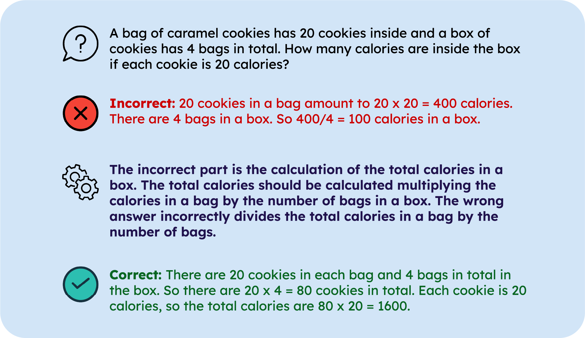

|
Lisa Alazraki
Hi! I am a third year PhD student in the NLP Group at Imperial College London, advised by Marek Rei.
I am broadly interested in the relationship between reasoning and language. I also have an interest in model robustness.
|


NewsMay 2025 New preprint! Reverse Engineering Human Preferences with Reinforcement Learning Apr 2025 Going to NAACL to present Meta-Reasoning Improves Tool Use in Large Language Models ‚úàÔ∏è Feb 2025 No Need for Explanations: LLMs can implicitly learn from mistakes in-context is available on ArXiv! Dec 2024 Meta-Reasoning Improves Tool Use in Large Language Models won 1st prize at Imperial's ICC Conference üéâ |
Research |
|
Reverse Engineering Human Preferences with Reinforcement Learning
Lisa Alazraki, Tan Yi-Chern, Jon Ander Campos, Maximilian Mozes, Marek Rei, Max Bartolo arXiv, 2025 paper |
|

|
How to Improve the Robustness of Closed-Source Models on NLI
Joe Stacey, Lisa Alazraki, Aran Ubhi, Beyza Ermis, Aaron Mueller, Marek Rei arXiv, 2025 paper / code |
|  |
No Need for Explanations: LLMs can implicitly learn from mistakes in-context
Lisa Alazraki, Maximilian Mozes, Jon Ander Campos, Tan Yi-Chern, Marek Rei, Max Bartolo arXiv, 2025 paper / code |

|
Enhancing LLM Robustness to Perturbed Instructions: An Empirical Study
Aryan Agrawal*, Lisa Alazraki*, Shahin Honarvar, Marek Rei (*Equal contribution) BuildingTrust @ICLR, 2025 paper / code |

|
How Can Representation Dimension Dominate Structurally Pruned LLMs?
Mingxue Xu, Lisa Alazraki, Danilo P. Mandic SLLM @ICLR, 2025 paper |
|
Meta-Reasoning Improves Tool Use in Large Language Models
Lisa Alazraki, Marek Rei NAACL Findings, 2025 paper / code |
|

|
How (not) to ensemble LVLMs for VQA
Lisa Alazraki, Lluis Castrejon, Mostafa Dehghani, Fantine Huot, Jasper Uijlings, Thomas Mensink PMLR Proceedings on ICBINB @NeurIPS, 2023 paper |
TeachingI am a Teaching Assistant for 70050 Intro to Machine Learning, 70016 Natural Language Processing, 70010 Deep Learning and 40008 Graphs and Algorithms. |
Supervision2025 Kevin Zhou 'Optimal Data Mixing Strategies at Different Token Budgets for Language Model Training', MSc dissertation, co-supervised with Marek Rei (Imperial College London) and Kris Cao (Cohere). 2024 Aryan Agrawal 'Improving the Robustness of LLMs to Prompt Perturbations', MSc dissertation, co-supervised with Marek Rei (Imperial College London), Thomas Mensink (Google Research) and Shahin Honarvar (Imperial College London). 2023 Ziheng Zhang 'Knowledge-Enhanced Supportive Memory for Chatbots', MEng dissertation, co-supervised with the Algorithmic Human Development group (Imperal College London) and Zissis Poulos (University of Toronto). 2022 Alicia Law 'A Multilingual Chatbot for Self-Attachment Therapy', MSc dissertation (Distinguished Dissertation award), co-supervised with the Algorithmic Human Development group (Imperial College London). |
Service
Conference reviewing: ACL 2025, AACL 2025, COLING 2025, COLM 2025, EMNLP 2025, NAACL 2025
|
|
Forked from Jon Barron's website. |